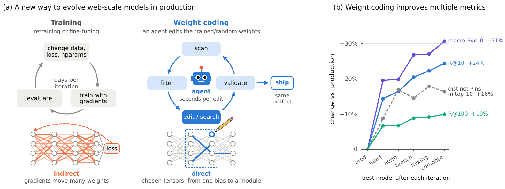

Contents · 5 sections
1Trained controls can still be edited directly2Scan editable sites, then edit against feedback3Edits that help alone still need a re-search when stacked4After a random reset, search only mixing and normalization5Other models, other objectives, and online resultsSHARE
Trained controls can still be edited directly
Once a recommender ships, objectives, inventory, and business constraints keep moving. The usual playbook is to tweak data, losses, or architecture and run another fine-tune. This Pinterest paper tries a different path: treat already-trained weights like code you can inspect, rewrite, compose, and iterate against evaluation feedback.
They call it weight coding. The main case is the deployed Image Search two-tower retriever, at 147M parameters. Its query tower runs a two-layer DHEN over the user, query Pin, and context, then retrieves by cosine similarity against the item tower.
By the end of training, DHEN's L0 and L1 LayerNorm gain values have fallen below where they started. Resetting the L0 gain and the L1 offset pushes recall@10 on the production evaluator up by 10.10 points. That edit, F04, touches only 128 values.
LayerNorm is no universal knob, of course, yet F04 opens a crack: trained weights still hold controls you can turn directly. From there, the same loop moves into targeted search and composition, and even rebuilds useful computation inside a randomly reinitialized interaction module.
Scan editable sites, then edit against feedback
The division of labor in weight coding is clear. Engineers state goals and constraints in natural language; an LLM agent inspects the model structure and weights, forms hypotheses, and runs edits in a sandbox. Each loop starts by scanning edit primitives across module groups on a development day, re-measuring on other days to drop edits whose sign flips, then making targeted changes or running a search. Engineers still pick candidates under the validation protocol, run online tests, and decide what ships. Setting goals and signing off on launches stay in human hands.
To make fast edit-and-evaluate loops practical, they run the production model once over the production evaluator's data and cache embeddings along with the needed intermediate outputs. Subsequent edits overwrite TorchScript parameters already loaded in GPU memory and recompute only the touched modules and whatever sits downstream. Once a site is picked but its exact values are still open, an evolution strategy tunes those selected values, or a per-row scale, against the production metric. The LLM agent picks where to search; it does not hand-tune numbers one by one. A full two-tower iteration takes less than 2 wall-clock hours to turn up a handful of candidates. That is offline iteration time, separate from serving latency: the edited artifact leaves serving logic untouched.
The validation split is strict. Scanning, editing, and search touch only development days. Filter days are only for tossing out single edits whose sign flips between the development day and the filter days. Held-out days never feed back into iteration. The evaluator ranks a positive by counting candidates whose scores are strictly higher than the positive. When a diagnostic edit that collapsed item embeddings managed to lift recall@10 from 0.626 to 0.639, they added pessimistic tie-breaking, placing tied candidates ahead of the positive. Every recall number below comes from this production evaluation setup.
The full scan tests 1,258 edits across 130 module groups. Of those, 47% move recall@10 by less than 0.1 points, and only 10% gain more than one point. Blind edits rarely pay off; the working sites cluster in DHEN normalization, branches, token mixing, and the output head.
Even among re-measured edits whose absolute development-day change topped one point, 23% flip sign on another day. Those unstable effects get filtered out before further development or composition.

Source: paper Figure 2. Left: both towers start from a cross-surface foundation model and are fine-tuned on Image Search logs. Right: the query tower's two-layer DHEN and the edit sites used here: gain, offset, branch, mixing, and steer.
Raising LayerNorm gains and dialing down the shared L1 offset both lift recall. The authors read this as boosting shortcut-carried tokens relative to later branches and shared offsets; shared offsets may also pull query embeddings toward a common direction and pile retrieval onto hub Pins. Dialing down branch contributions and boosting the L0 shortcut help in the same way. Cutting all four branches outright, leaving only linear token mixing and LayerNorms, still gains 6.1 points on every held-out day, beating production every day. On this metric, the trained branches make a negative net contribution.
The head edit r4 goes after a different shared quantity. It nudges the retrieval head's bias away from the mean embedding of non-fresh Pins and toward the fresh direction, adds a constant shift, and blends in 20% of another trained output head's weights. Those four scalar settings alone bring 8.83 points on the production evaluator. Under the hood, r4 touches 65.6k values with no search.
Edits that help alone still need a re-search when stacked
Beyond discrete edits, trained token-mixing weights tend to crowd onto a few inputs. Starting from the trained weights, they search five DHEN mixing matrices, 2,064 values in all, for 150 steps. The resulting edit, L01, adds 13.69 points on the production evaluator.
The matrices shift by 39% to 64% in relative norm, while their root mean square moves by only −6% to +16%. Mostly, the search is rebalancing token contributions rather than relearning representations from scratch. You can see it clearly in the L0 shortcut: smaller token shares climb, dominant ones drop, and normalized entropy moves from 0.94 to 0.97.
Stacking two winning edits does not automatically stack their gains. Dropping r4 straight onto L01 cuts the four-day gain from 14.1 points to 10.2. The authors suggest the two edits may be stepping on each other, correcting the same shared offsets and shortcut balance. So they put r4 in place first, then re-search the mixing matrices and the retrieval head's bias under the same setup to get L07. L07 touches 67.7k values, with 2,128 actually searched; it adds 15.00 points on the production evaluator and 15.7 across held-out days, with +13.8 even on the worst day. The abstract also cites this best result as a 24% relative gain over production.
Here is the compute bill. Training the cross-surface foundation model takes more than 200 GPU hours, and a surface-level post-training fine-tune runs about 140 GPU hours on 8 A100s. One full weight-coding loop averages 8.6 GPU hours; reaching the best model reported here took 4 loops, or roughly 24.6% of that fine-tune. Those are GPU hours, a different denominator from the earlier wall-clock figure of under 2 hours.
Across all rounds, the agent evaluated more than 2,000 edit configurations and about 190,000 search candidates.

Source: paper Figure 1. Left: ordinary training versus weight coding, where gradients nudge many weights indirectly while weight coding edits chosen tensors directly. Right: relative metric changes versus production across successive iterations; at the compose stage, the figure labels recall@10 at +24% relative, macro R@10 at +31%, distinct Pins in the top-10 at +16%, and recall@100 at +10%. The body does not define how macro is grouped, so these numbers follow the figure labels as written.
| Edit | Changed | Searched | Production-evaluator ΔR@10 |
|---|---|---|---|
| r4 | 65.6k | 0 | +8.83 |
| F04 | 128 | 0 | +10.10 |
| L01 | 2,064 | 2,064 | +13.69 |
| L07 | 67.7k | 2,128 | +15.00 |
| L05 | 13.6M | 2,448 | +9.80 |
Source: paper Table 2. L07 is the best two-tower edit, produced by re-searching L01 with r4 in place. L05 rebuilds a randomly reinitialized DHEN by searching mixing and normalization. Gains are absolute percentage points versus production under the same evaluation setup.
After a random reset, search only mixing and normalization
Next question: do these gains actually depend on starting from trained weights? The test is straightforward: reinitialize a module with default PyTorch initializers and leave the rest of the trained model alone. Resetting some modules crashes development-day recall nearly to zero; others drop far less.
Recovery hinges on what you search. Tuning only row scales across a randomly reset DHEN still lands 10.0 points below production, since row scaling cannot change how tokens mix. L05 takes a different route: after reinitializing all 13.6M DHEN parameters, it searches only the mixing matrices and LayerNorms, 2,448 values total. That puts it 9.80 points above production on the production evaluator and 10.5 points above across held-out days. Most parameters inside the rebuilt interaction module stay random, while the encoders, output head, and item tower keep their trained weights. Hoot says
The body already notes that after a random reset of the whole DHEN, searching only row scales stays 10.0 points below production. Here we use illustrative weights on one row of three tokens to see why row scaling cannot change how they are mixed. A share is each absolute weight over the total, matching the paper's definition for the L0 shortcut. The numbers below are illustrative.
three mixing weights on one row → shares are absolute-weight fractions → multiply the whole row by one scale → shares stay the same → only editing the individual weights reallocates the mix
- three illustrative weights → each token's mixing shareIllustrative: after a random start, one row has mixing weights 2, 2, and 6, which sum to 10. The three token shares are therefore 20%, 20%, and 60%, so C dominates.2+2+6=10; shares = 2/10, 2/10, 6/10
- scale the whole row by 1.5 → weights change, shares do notRow scaling multiplies all three weights by 1.5, giving 3, 3, and 9, which sum to 15. The shares are still 20%, 20%, and 60%, so the relative mix is unchanged.2×1.5=3, 6×1.5=9; 3/15 and 2/10 both equal 0.2
- edit the individual mixing weights → shares are reallocatedIf the same row is searched to 5, 3, and 2, the total is still 10, but the shares become 50%, 30%, and 20%. The contributions of A and B rise, which row scaling cannot do.5+3+2=10; shares = 5/10, 3/10, 2/10
After a random reset, row scaling alone cannot restore a useful mix; L05 searches the mixing matrices and LayerNorms, not row scales only.

Source
Paper §4.4.2: searching only row scales of the whole random DHEN remains 10.0 points below production, because row scaling cannot change how tokens are mixed. In the L0 shortcut, a token's share is its fraction of total absolute mixing weight. The weights 2, 2, 6, 1.5, 5, 3 and the resulting shares are illustrative.Whether searching mixing from random starts or searching after a whole-DHEN reset, runs hug zero recall for a long stretch before crossing production after about 90 to 110 steps. Two whole-DHEN searches with different seeds trace similar curves. The resulting mixing matrices correlate with the trained ones at only 0.13 to 0.46, yet the shifts they induce in token shares correlate at 0.76 with searches started from trained weights. The exact matrix entries are not rigid; get the share redistribution right, and the mixing works.

Source: paper Figure 4. (a) Red dots show development-day recall after reinitialization; blue dots show held-out results after search. (b) Stacking r4 as-is versus stacking it and re-searching. (c) Search trajectories from trained and random starts. (d) Re-search trajectories after adding r4.
Other models, other objectives, and online results
The same loop carries over to other production models in the funnel, though the actual edits usually have to change. PinRec is a deployed 106M generative retriever built on an autoregressive transformer and a shared Pin embedder. Here, unordered recall@k counts a hit if any query embedding puts the target in the top k, while ordered recall requires a match at the corresponding autoregressive step. Resetting the Pin embedder's LayerNorm gains drops development-day unordered recall@10 by 8.8 points.
What works instead is zeroing the output bias and interpolating halfway toward an Image Search fine-tune used for ads; each lifts every metric on every held-out day. The interpolation curve also exposes a boundary: unordered recall@1 keeps climbing toward the fine-tune, while ordered recall@1 peaks short of that endpoint and then drops below production. Combining halfway interpolation with a reset of the output head's hidden-layer bias raises held-out unordered recall@1 by 2.31 points and ordered recall@1 by 2.64 points.
The largest model tested is a 1.37B ranker using an 8-expert, 15-head multi-gate MoE. Resetting expert LayerNorm gains to one cuts closeup AUC by 0.029 in absolute terms. Scaling those gains down does the opposite: it weakens the experts relative to the direct path and improves ranking.
Both half-scale and quarter-scale edits raise utility NDCG on every held-out day; Table 3 summarizes the gain at +0.53%, with z-scores from 7.8 to 10.5. Hit@3 also rises for closeups, saves, downloads, and shares (here hit@3 counts the engaged Pins in each request's top three candidates, per user). Which edits work depends tightly on the model; many two-tower changes do not carry over to PinRec or the ranker.
Steering offers another lever. The direction u is the difference between mean item embeddings with and without the attribute, written straight into the retrieval head's bias as w ← w + αu so you skip touching embeddings on every inference call. Along a freshness or product direction, one coefficient α dials that segment's top-10 share up or down. At α=1, freshness steering lifts overall recall@10 by 4.5 points and fresh recall by 14.4, taking fresh exposure from 5.2% to 13.4%. Product steering adds 12.8 points to product recall while costing 1.5 points of overall recall, trading overall recall for product recall; product exposure moves from 0.26% to 1.06%.
Across the tested range, exposure moves monotonically with α: the fresh share runs from 2% at α=−1 to 70% at α=5, and the product share hits 39% at α=5. Pushing product steering too hard concentrates results, because it drives the share of the top-1% most popular Pins from 0.10 to 0.42 and roughly marks the usable boundary of that knob. Stacking the α=1 product direction onto L07 lifts its product-recall gain from 28.3 points to 38.2, with an overall gain of 14.1 points.

Source: paper Figure 5. (a) PinRec interpolation from production toward a fine-tune snapshot, where unordered and ordered recall@1 diverge. (b) Relative shifts in utility NDCG and hit@3 after scaling down ranker experts. (c)(d) Two-tower recall@10 under fresh and product steering.
Online A/B tests ran the edited two-tower on live production traffic. Each arm covers about 10M users for about a week, attributed to that retrieval source, measured per user against production. Fresh Pins are defined as at most 28 days old.
One set of arms targets recall across all engagement types. Given the data distribution, those models lean toward closeup. All six arms raise closeups per impression, tracking the production-evaluator recall@10 gain with a Pearson correlation of 0.97. Long clicks and product share climb as well, while saves can decline.
Another set swaps out the evaluation objective. Using positives from production traffic and a serving index of more than 50M Pins, they search the same 2,128 values as L07, optimize save-type recall, and add hinge penalties on clicks, long clicks, and products.
Three searches with different starts and corpus weights yield A2, B2, and C2. Saves from the edited source rise by 8.4% to 10.7% per user and 4.3% to 5.3% per impression; closeups rise too, while long clicks and product share drop. A2 lifts closeups by 7.6% and saves by 10.7% per user, so the same editable sites can steer toward a different business metric once you swap the objective, positives, and corpus.
| Arm | Objective | Closeups / user | Saves / user |
|---|---|---|---|
| L07 | All engagement, closeup-leaning | +6.7% | −0.3% |
| A2 | Save, with caps on clicks and products | +7.6% | +10.7% |
| B2 | Same | +4.8% | +8.4% |
| C2 | Same | +6.6% | +9.6% |
Source: paper Table 4, closeups and saves only. The all-engagement group also includes r4, r6, F04, L01, and L06; closeups rise in every arm, while saves move up in some and down in others.
The authors also flag cannibalization across retrieval sources: the ranker tends to push Pins from the edited model higher, cutting into other retrievers' impression share and engagement. In their view, pre-ranking and ranking need not worry about that cannibalization; for weight-coded pre-ranking models, the paper only mentions site-wide gains qualitatively and gives no numbers.
Offline, most tested variants improve all ten engagement types on every held-out day, with both fresh and non-fresh engagement up every day. For searched edits, recall@10 gains drop by 4.5 points on average going from the development day to held-out days, though they stay positive on held-out days. On a separate corpus, L07 still gains 9.7 points, and gains hold on the full corpus as well as on recall@1000, which was never optimized. Distinct Pins in the top-10 climb by 9% to 18%, while the share of the top-1% most popular Pins drops. That backs up generalization inside the tested setup, though the paper explicitly notes it cannot rule out adaptive overfitting or biases shared across dates.
Why is there still so much room to edit trained models? The authors conjecture that a single training schedule can leave normalization gains, shared offsets, and branch strengths poorly balanced for the target task. One clue: resetting the L0 gain drops the retrieval head's in-batch sampled-softmax loss on the last training day from 1.300 to 1.015. Still, low gains alone do not tell the whole story. Retraining without weight decay on one-dimensional parameters brings LayerNorm gains near one, yet loses 3.5 recall@10 points on the production evaluator; running mixing-matrix search on that retrain still adds 16.8 points, compared with 14.1 on production.
Weight coding does not wrap up in a one-time patch that sets every knob once; it behaves like a repeatable development path. Making it routine means figuring out which modules can be steered effectively with few parameters, and whether past edits survive model or data shifts. Reusing an edit requires revalidation and tracking it alongside its starting checkpoint, code, evaluation data, and objective. Online feedback helped in this work, though it was not wired into the loop automatically. Launch calls and business trade-offs still sit with engineers and experts.
How did this read for you?
Hoot made a note. Thanks for the feedback.
One tap, no sign-in; tap again to undo. Only anonymous counts are kept, never who you are.
Discussion
Add experiment details, reproduction notes or a different take. Requires a GitHub sign-in.
Loading the discussion…